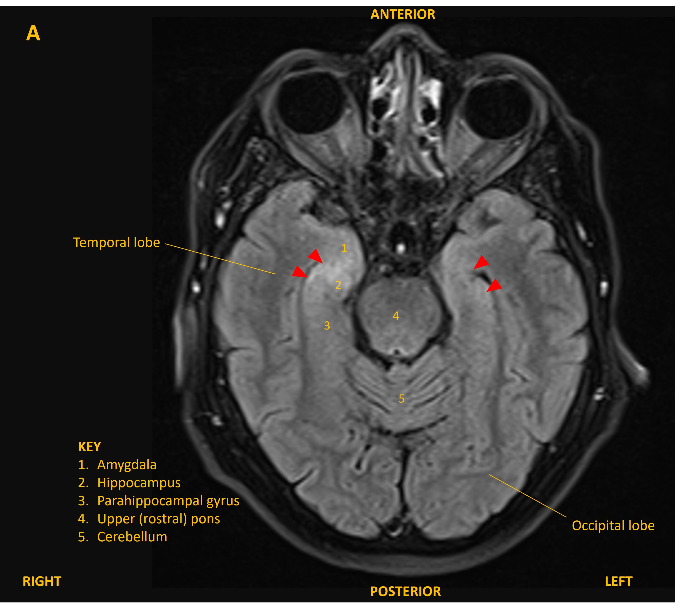
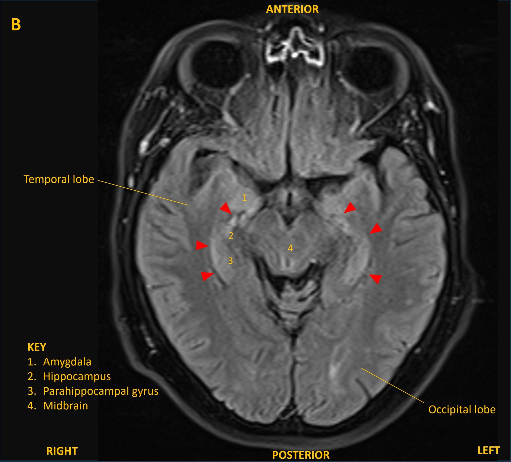

Case 19 - Memory problems
Outcome
The patient was admitted and was treated empirically with aciclovir for possible viral encephalitis until a lumbar puncture showed normal CSF cell counts, glucose, and protein, and viral PCR was negative. An MRI brain showed bilateral changes on FLAIR confined to the mesial temporal lobes, involving the hippocampi and other limbic structures (figure A and B, red arrowheads). This was suggestive of limbic encephalitis.


An EEG also showed abnormal electrical activity in the temporal lobes, supportive of the diagnosis.
A CT of the body showed enlarged lymph nodes in the mediastinum, and a biopsy sadly showed small cell lung cancer (SCLC) invading the nodes. Paraneoplastic antibody tests found the anti-Hu antibody, which is recognised in SCLC-associated limbic encephalitis.
His memory symptoms progressed. He was treated with chemotherapy and radiotherapy to target the cancer, as well as steroids for encephalitis. His cancer showed radiological response, with reduction in the size of the lymph nodes.
Unfortunately, his cognitive symptoms did not improve and his MRI continued to be abnormal. He developed temporal lobe seizures, sometimes generalising, which were controlled with medication, but unfortunately his neurological condition continued to decline and he required admission to a nursing home.
He passed away from his illness several months after diagnosis.
Final diagnosisSubacute amnesia and sleep disturbance due to paraneoplastic limbic encephalitis associated with SCLC and anti-Hu antibodies, with fatal neurological decline despite treatment-responsive cancer.
Key points